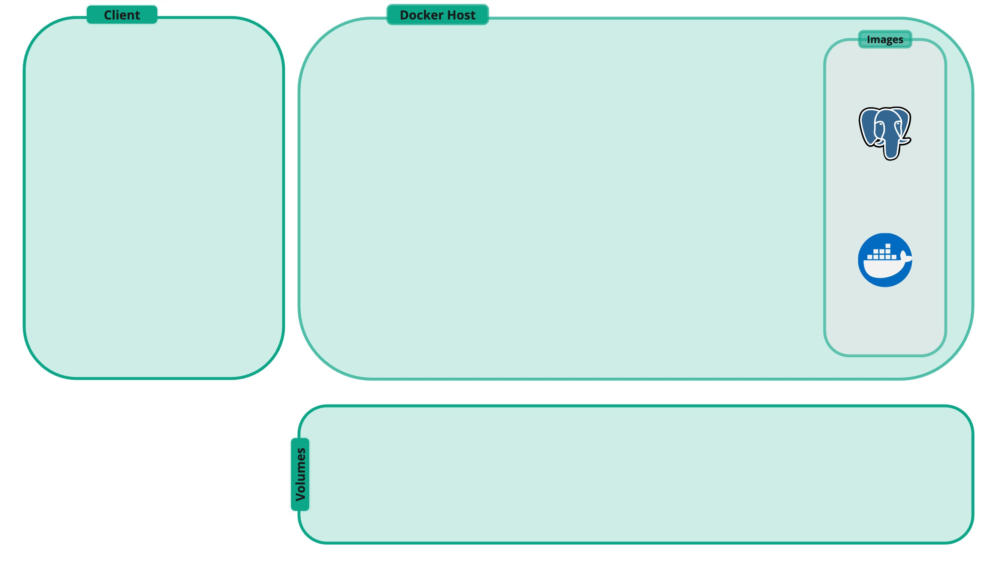
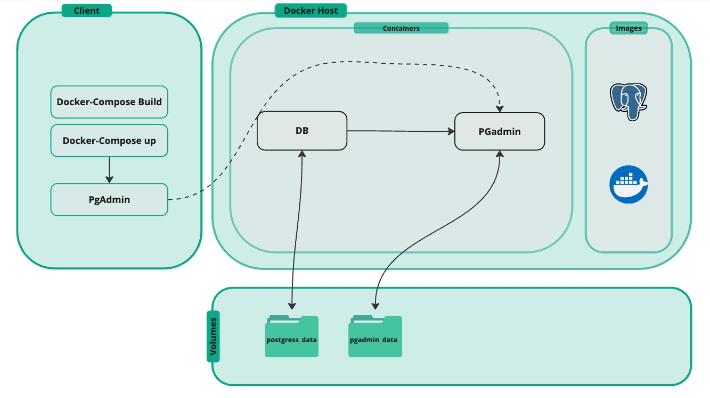

Stored Procedures and User Defined Functions in PostgreSQL
Karen Hovhannisyan
A little bit about me...
About Me
Objective
- What are Stored Procedures and User Defined Functions?
- When and Why to use each Stored Procedures and UDFs?
- Creating Stored Procedures in PostgreSQL
- Creating User Defined Functions in PostgreSQL
- Examples and Use Cases
- Q&A
Stored Procedures (SPs)
Definition
A Stored Procedure is a precompiled collection of SQL statements and optional control-of-flow logic (loops, conditionals) stored inside the database.
- Executed on demand by calling its name
- It can accept input parameters, return output parameters, and/or return result sets
Why use Stored Procedures?
- Encapsulation: Centralize business logic with a stable interface
- Performance: Fewer client↔DB round-trips
- Reusability: Call from multiple apps and contexts
- Maintainability: Update logic in one place
- Security: Grant
EXECUTEinstead of direct table DML
Pseudocode
-- Stored Procedure (pseudocode)
CREATE PROCEDURE procedure_name (parameters)
AS
BEGIN
-- SQL statements
-- Control flow (IF, LOOP, etc.)
-- Business logic
END;
Execution
-- Execute a stored procedure (generic form)
EXECUTE/CALL procedure_name(param_values...);
Creating Stored Procedures | INSERT
CREATE OR REPLACE PROCEDURE add_customer(
p_customer_id INT,
p_customer_name TEXT,
p_address TEXT,
p_city TEXT,
p_zip TEXT
)
LANGUAGE plpgsql
AS $$
BEGIN
INSERT INTO customers(customer_id, customer_name, address, city, zip_code)
VALUES (p_customer_id, p_customer_name, p_address, p_city, p_zip);
END;
$$;
-- CALL add_customer(10001, 'John Doe', '123 Main St', 'Yerevan', '0010');
Creating Stored Procedures | SELECT
CREATE OR REPLACE PROCEDURE get_customer(
p_customer_id INT,
OUT o_name TEXT,
OUT o_city TEXT,
OUT o_zip TEXT
)
LANGUAGE plpgsql
AS $$
BEGIN
SELECT customer_name, city, zip_code
INTO o_name, o_city, o_zip
FROM customers
WHERE customer_id = p_customer_id;
END;
$$;
-- CALL get_customer(10001, NULL, NULL, NULL);
Creating Stored Procedures | UPDATE
CREATE OR REPLACE PROCEDURE update_product_price(
p_product_id INT,
p_new_price NUMERIC
)
LANGUAGE plpgsql
AS $$
BEGIN
UPDATE products
SET price = p_new_price
WHERE product_id = p_product_id;
END;
$$;
-- CALL update_product_price(2001, 19.99);
Creating Stored Procedures | DELETE
CREATE OR REPLACE PROCEDURE delete_order_safe(p_order_id INT)
LANGUAGE plpgsql
AS $$
BEGIN
-- First delete dependent sales rows (FK ON DELETE RESTRICT)
DELETE FROM sales WHERE order_id = p_order_id;
-- Then delete the order itself
DELETE FROM orders WHERE order_id = p_order_id;
END;
$$;
What else? Batch / ETL Workflow
CREATE OR REPLACE PROCEDURE load_monthly_sales(
month_start DATE, month_end DATE
)
LANGUAGE plpgsql
AS $$
BEGIN
INSERT INTO sales_fact(order_id, product_id, customer_id, total_sales)
SELECT o.order_id, s.product_id, s.customer_id, SUM(s.total_sales)
FROM orders o
JOIN sales s ON s.order_id = o.order_id
WHERE o.order_date >= month_start
AND o.order_date < month_end
GROUP BY o.order_id, s.product_id, s.customer_id;
END;
$$;
-- CALL load_monthly_sales('2025-08-01','2025-09-01');
Transactions & Error Handling
CREATE OR REPLACE PROCEDURE transfer_credit(
from_emp INT, to_emp INT, amt NUMERIC
)
LANGUAGE plpgsql
AS $$
BEGIN
IF amt <= 0 THEN
RAISE EXCEPTION 'Amount must be positive';
END IF;
UPDATE employees SET salary = salary - amt WHERE employee_id = from_emp;
IF NOT FOUND THEN RAISE EXCEPTION 'Sender % not found', from_emp; END IF;
UPDATE employees SET salary = salary + amt WHERE employee_id = to_emp;
IF NOT FOUND THEN RAISE EXCEPTION 'Receiver % not found', to_emp; END IF;
-- Optional: explicit transaction control when procedure is the unit of work
-- COMMIT;
EXCEPTION WHEN OTHERS THEN
-- ROLLBACK;
RAISE;
END;
$$;
-- CALL transfer_credit(1, 2, 100);
Risks
- Portability: Syntax differs across DBs (PL/pgSQL vs T-SQL vs PL/SQL)
- Versioning: Keep procedures in migrations; document parameters & behavior
- Overuse Risk: Avoid DB-monolith; balance with app layer / dbt
- Observability: Add auditing/logging where appropriate
Best Practices
- Keep procedures small and modular
- Use meaningful, action-oriented names
- Prefer set-based logic over row-by-row loops
- Validate inputs; fail fast with clear messages
- Document parameters, side effects, and expected outcomes
User Defined Functions (UDFs)
Definition | Function
A named block of code that performs a specific task, by taking an input parameters, processing them and return an output
function add(a, b):
return a + b
x = add(2, 3) --> returns 5
Definition | UDF
A User-Defined Function (UDF) is a function that you (the user) create inside the DB.
Unlike built-in functions (SUM(), AVG(), NOW()), UDFs let you extend
SQL with custom logic, liv inside the database, so they can be used in queries, WHERE, JOINs,
SELECTs statements
function add(a, b):
return a + b
x = add(2, 3) --> returns 5
Why Do We Need UDFs?
- Encapsulation of Logic: Instead of repeating formulas everywhere, define them once as a function.
- Consistency: Ensures all queries use the same rule.
- Maintainability: Makes SQL queries shorter and easier to understand.
- Performance: SQL-language UDFs can be inlined and optimized by DB
UDF Types
- Scalar Functions: Return a single value (e.g., integer, text).
- Table-Valued Functions: Return a table (set of rows).
- Aggregate Functions: Perform calculations on a set of values and return a single value (e.g., SUM, AVG).
UDF Properties in PostgreSQL
| Category | Meaning | Example | |
|---|---|---|---|
| Volatility | IMMUTABLE | Always same result for same input Can be used in indexes; precomputed |
calc_bonus(100, 0.1) |
| STABLE | Same within a query, may change between queries | current_date |
|
| VOLATILE | May change anytime; executed as written | random(), clock_timestamp() |
|
| Parallel Safety | PARALLEL SAFE | Can run in parallel workers No writes or global state |
calc_bonus() |
| PARALLEL RESTRICTED | Allowed, but only in leader process (uses cursors, temp tables) |
Functions with limited dependencies | |
| PARALLEL UNSAFE | Not safe in parallel (writes, sequences, side effects) | nextval(), DML functions |
Pseudocode | Scalar
FUNCTION double_value(x)
RETURNS number
BEGIN
RETURN x * 2
END
SELECT double_value(5) FROM TABLE --> returns 10
Pseudocode | Table Valued Functions
FUNCTION products_over_price(min_price)
RETURNS TABLE(product_id, product_name, price)
BEGIN
RETURN
SELECT id, name, price
FROM Products
WHERE price > min_price
END
CALL products_over_price(100)
--> returns a result set (multiple rows)
Pseudocode | Aggregate Function
AGGREGATE_FUNCTION product_of_values(input_column)
RETURNS number
BEGIN
result = 1
FOR each value IN input_column
result = result * value
RETURN result
END
CALL product_of_values(sales.quantity)
--> returns product of all quantities
Creating UDFs in PostgreSQL | Scalar 1
CREATE OR REPLACE FUNCTION calc_discounted_price(
p_price NUMERIC,
p_discount NUMERIC -- e.g. 0.10 = 10%
)
RETURNS NUMERIC
LANGUAGE sql
IMMUTABLE
PARALLEL SAFE
AS $$
SELECT GREATEST(
0,
COALESCE(p_price, 0)
* (1 - LEAST(GREATEST(COALESCE(p_discount, 0), 0), 0.999999))
);
$$;
Creating UDFs in PostgreSQL | Scalar 2
CREATE OR REPLACE FUNCTION order_total(p_order_id INT)
RETURNS NUMERIC
LANGUAGE sql
STABLE
PARALLEL SAFE
AS $$
SELECT COALESCE(SUM(s.total_sales), 0)
FROM sales s
WHERE s.order_id = p_order_id
$$;
Creating UDFs in PostgreSQL | TVF 1
CREATE OR REPLACE FUNCTION top_products_by_revenue(p_limit INT)
RETURNS TABLE (
product_id INT,
product_name TEXT,
revenue NUMERIC,
qty BIGINT
)
LANGUAGE sql
STABLE
AS $$
SELECT
p.product_id,
p.product_name,
COALESCE(SUM(s.total_sales), 0) AS revenue,
COALESCE(SUM(s.quantity), 0) AS qty
FROM products p
LEFT JOIN sales s ON s.product_id = p.product_id
GROUP BY p.product_id, p.product_name
ORDER BY revenue DESC, qty DESC, p.product_id
LIMIT GREATEST(p_limit, 0)
$$;
Creating User UDFs in PostgreSQL | TVF 2
CREATE OR REPLACE FUNCTION recent_orders(
p_customer_id INT,
p_limit INT
)
RETURNS TABLE (
order_id INT,
order_date TIMESTAMP,
year INT,
quarter INT,
month TEXT,
total NUMERIC
)
LANGUAGE sql
STABLE
AS $$
SELECT
o.order_id,
o.order_date,
o.year,
o.quarter,
o.month,
SUM(s.total_sales) AS total
FROM orders o
JOIN sales s ON s.order_id = o.order_id
WHERE s.customer_id = p_customer_id
AND o.order_date IS NOT NULL
GROUP BY o.order_id, o.order_date, o.year, o.quarter, o.month
ORDER BY o.order_date DESC
LIMIT GREATEST(p_limit, 0)
$$;
Creating UDFs in PostgreSQL | Aggregate
Step 1: Create the state transition function
CREATE OR REPLACE FUNCTION multiply_state(state NUMERIC, val NUMERIC)
RETURNS NUMERIC
LANGUAGE sql
IMMUTABLE
PARALLEL SAFE
AS $$
SELECT COALESCE(state, 1) * COALESCE(val, 1);
$$;
CREATE AGGREGATE product_of_quantities(NUMERIC) (
SFUNC = multiply_state,
STYPE = NUMERIC,
INITCOND = '1'
);
Best Practices
- Keep UDFs small and modular
- Use meaningful, action-oriented names
- Validate inputs; fail fast with clear messages
- Document parameters, side effects, and expected outcomes
UDF vs SP
UDFs vs SPs
| Aspect | UDF (User-Defined Function) | Stored Procedure |
|---|---|---|
| Return Value | Must return something (scalar, table, trigger) | May return nothing; focus on actions |
| Usage | Used in SELECT, WHERE, JOIN |
Called via CALL; runs as a workflow |
| Transaction Control | No COMMIT/ROLLBACK allowed | Can manage transactions explicitly |
| Typical Use | Reusable formulas, formatting, calculations | Batch jobs, data modifications, admin tasks |
| Performance | Can be inlined and optimized by planner | Reduces client↔DB round trips |
| Security | Primarily for safe computations | Can act as a security boundary with EXECUTE rights |
SPs, UDFs, and dbt
| Aspect | User-Defined Function (UDF) | Stored Procedure (SP) | dbt |
|---|---|---|---|
| Return / Output | Always returns (scalar, table, trigger) | May not return anything | Materializes models (tables/views) |
| Use Case | Reusable formulas in queries | Workflows, batch jobs, transactions | Analytics pipelines, testing, lineage |
| Transaction Control | No | Yes (COMMIT/ROLLBACK) | No (handled externally by orchestration) |
| Strength | Compact, reusable, optimizer-friendly | Security boundary, operational workflows | Version control, CI/CD, data quality |
| Best Fit | In-query logic & transformations | Transactional apps, admin ops | Analytics & ELT transformations |
Let's Practice
Our Schema

Create DB using Docker | docker image
Create DB using Docker | services
Repo Structure
.
├── README.md
├── .env # Environment variables
├── docker-compose.yml # Docker Compose configuration
├── img # screenshots
├── sql # sql init files
│ ├── 01_schema.sql # building the schema
│ ├── 02_et.sql # inserting the csv file
│ ├── 03_sps.sql # stored procedures (optional)
│ ├── 03_udfs.sql # udfs (optional)
└── docs # Documentation assets
├── imgs # Image assets for documentation
└── index.html # Presentation
Environment Variables
PORT = 5432
DB_USER=admin
DB_PASSWORD=password
DB_NAME=aca
PGADMIN_EMAIL=admin@admin.com
PGADMIN_PASSWORD=admin
Build Containers
docker-compose up --build
Stop Containers
docker-compose down
Create Stored Procedure | upsert product
if product exists then update the price, else insert new one
CREATE OR REPLACE PROCEDURE upsert_product(
p_id INT,
p_name TEXT,
p_price NUMERIC,
p_desc TEXT,
p_cat TEXT
)
LANGUAGE plpgsql
AS $$
BEGIN
-- TODO:
-- 1. Insert a new product with the given values
-- 2. If the product_id already exists, update the row instead
-- (make sure NULL inputs don't overwrite existing values)
-- 3. Raise a NOTICE to indicate whether it was inserted or updated
END;
$$;
-- Example Tests:
-- CALL upsert_product(2001, 'USB-C Cable', 9.99, '1m braided', 'Accessories');
-- CALL upsert_product(2001, NULL, 8.99, NULL, NULL);
-- SELECT * FROM products WHERE product_id = 2001;
Create a scalar UDF | bonus calculator
if product exists then update the price, else insert new one
CREATE OR REPLACE FUNCTION calc_bonus(
p_salary NUMERIC,
p_pct NUMERIC -- e.g., 0.10 = 10%
)
RETURNS NUMERIC
LANGUAGE sql
AS $$
-- TODO: return bonus = salary * pct
$$;
-- Test:
SELECT employee_id, first_name, salary, calc_bonus(salary, 0.15) AS bonus
FROM employees;
Thank You
Create a TVF | top N
Write a function that returns the top N customers by total revenue
CREATE OR REPLACE FUNCTION top_customers(
p_limit INT
)
RETURNS TABLE (
customer_id INT,
customer_name TEXT,
revenue NUMERIC
)
LANGUAGE sql
AS $$
-- TODO: aggregate total_sales from sales per customer
-- ORDER BY revenue DESC
-- LIMIT p_limit
$$;
-- Test:
SELECT * FROM top_customers(5);